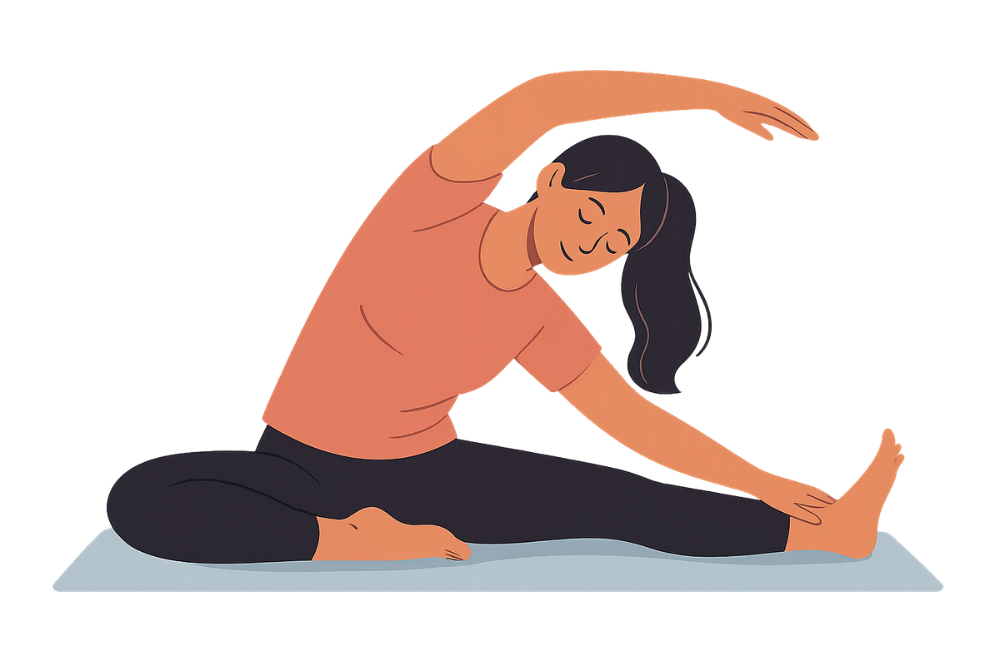
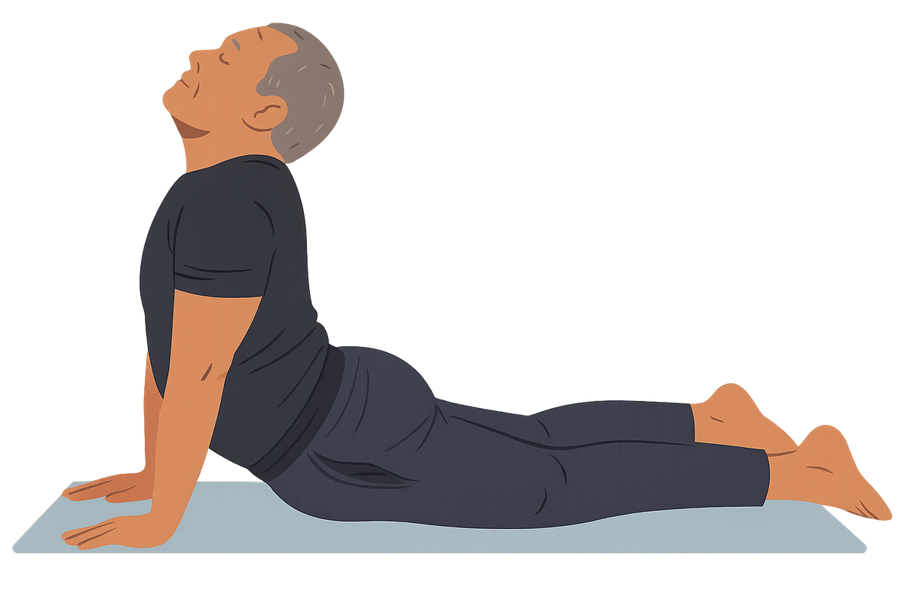
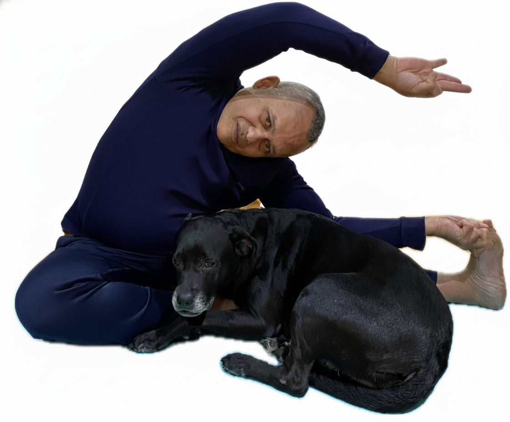
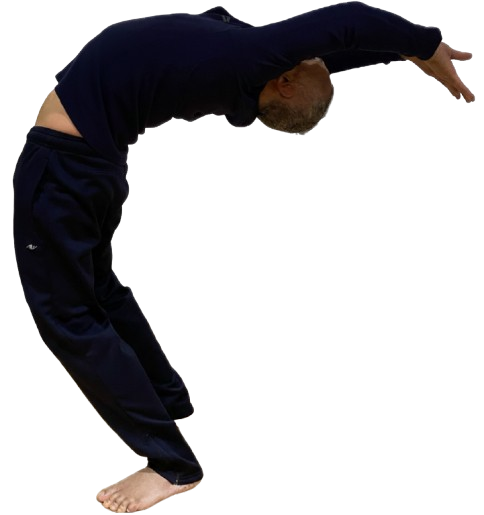
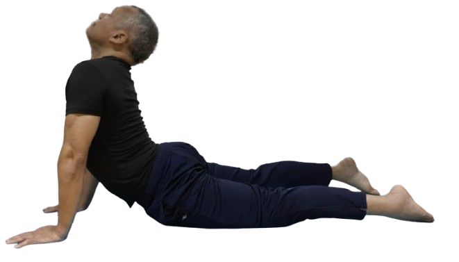
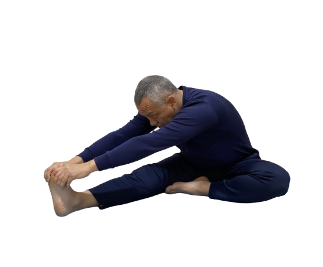
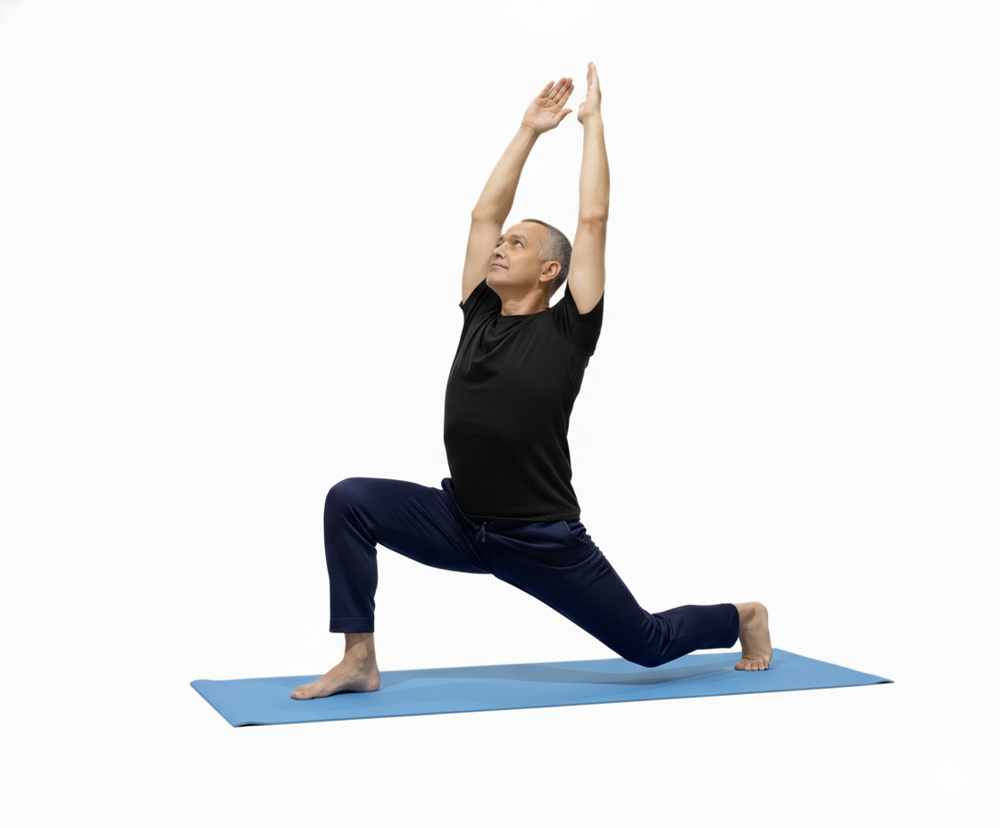
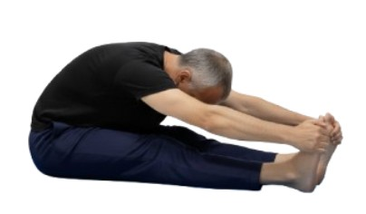

Flexibility, mobility, and body awareness

What is Stretching? – Stretching is the practice of deliberately lengthening and loosening muscles and their surrounding connective tissues to enhance flexibility, mobility, and joint range of motion. By gently guiding a muscle towards its end-range, holding or moving through the extension, we train it to operate more effectively and with less tension.
This process supports not only a better muscular and skeletal system, but also a more comfortable and functional experience of movement.
Why Stretch? The Benefits Integrating regular stretching into your class routine or personal practice brings numerous benefits for body and mind—here are some of the key ones:

When muscles and joints become more supple, you'll enjoy a broader, freer range of movement. This helps you with everyday tasks (e.g., bending, reaching) as well as more dynamic movements.
Stretching allows muscles to operate more smoothly and joints to move with less restriction. That means improved efficiency in your movement patterns and better performance when running, jumping, lifting or simply playing.
Regular stretching helps keep muscles elongated and balanced. That reduces the likelihood of tightness, strain or compensatory injuries that can come from one area over-working while another is under-used.
Stretching promotes blood flow to muscles and tends to ease stiffness. Especially when combined with light movement or warm-up, it helps tissues receive nutrients and sheds metabolic by-products more quickly.
Tight muscles often pull joints out of alignment or restrict natural posture. Stretching can help correct those imbalances, ease everyday aches and pains (especially for those who sit a lot) and support better physical comfort.
Stretching gives you a chance to slow down, breathe, and connect with your body. The act of stretching has been shown to calm muscle tension, improve mood and support a more mindful state of being.

Here are some practical guidelines you can share with your class-participants:

Warm up lightly before deep stretching: a few minutes of light cardio or movement before static stretches helps prepare the muscles.
Choose appropriate types of stretching. For example:
Static stretches (holding a position) are great for improving flexibility and after-class cooldowns.

Dynamic stretches (moving through a range) are excellent for warming up and prepping the body for action.
Hold gentle, sustained stretches rather than bouncing or pushing too hard. Avoid sharp pain—comfortable tension is the signal.
Be consistent. Even short sessions (e.g., 5–10 minutes) daily or most days yield meaningful gains over time.

Focus on the right muscles. If you have a particular area of tightness (e.g., hips, shoulders, lower back) devote extra attention there.
Listen to your body. Stretching is beneficial, but if you have a known injury or condition (e.g., joint issues, healing tissue) check with a qualified professional for personalized guidance.

In our classes we integrate stretching with purpose:
to prepare your body for movement and protect it,
to release built-up tension (especially important if you're on your feet driving or spending long hours),
to support your long-term mobility and comfort (especially helpful if you heel-strike in walking/running, as stretching the calves, hamstrings, glutes and hip flexors can reduce compensations),

and to give you that mindful movement experience: a moment of connection, refreshment and movement flow.
Price $50.00 one hour class.
Price: one hour class TBD
To find out more details about our course, benefits, and start dates, please send an email to
"Flexibility is not just physical — it's a mindset. When we stretch our bodies, we also stretch our limits."